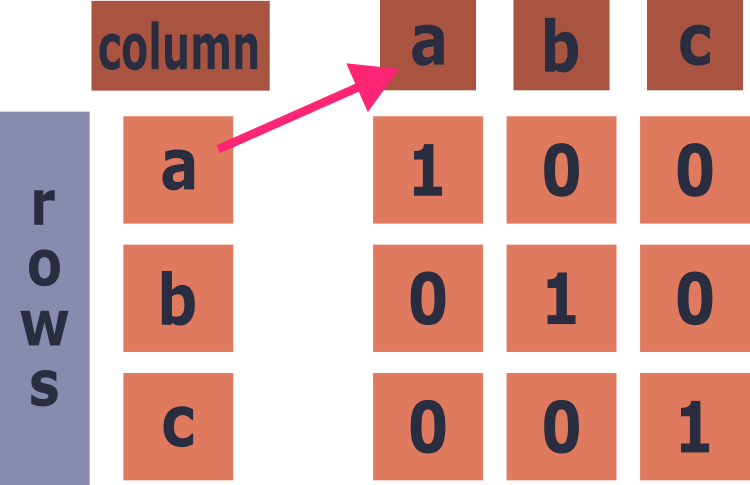
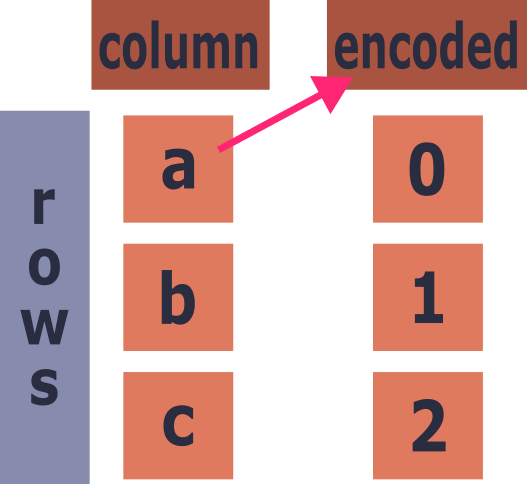

Learning Objectives
OneHotEncoder, OrdinalEncoder and np.where() to a dataset
Introduction
In all the examples so far, the data has been continuous and quantitative, with categorical data ignored, despite being a very commonly seen type.
Machine learning models can only work with numerical data, which means text-based categories need to be converted into a numerical format that best describes their relationship to each other and the target variable.
Mushrooms
To demonstrate different approaches to encoding categorical data we will be using the mushroom dataset, which contains a mix of numerical and categorical data.
From the overview it can be seen that many of the columns have single letters that are code for a descriptive category, as well as some NaNs in the gill-spacing feature, which we will look at shortly. To understand how the data should be encoded we must first know what they stand for and how the categories relate to each other. As with quantitative data, knowing the background of the features is important to getting the most out of them.
Below are two tables extracted from the metadata that accompanies the tabular data.
Categorical Features
| Column | Description | Categories |
|---|---|---|
class |
Target label (binary) | p = poisonous, e = edible |
cap-shape |
Shape of the cap | b = bell, c = conical, x = convex, f = flat, s = sunken, p = spherical, o = others |
cap-color |
Colour of the cap | n = brown, b = buff, g = grey, r = green, p = pink, u = purple, e = red, w = white, y = yellow, l = blue, o = orange, k = black |
does-bruise-or-bleed |
Whether the flesh bruises or bleeds | t = bruises or bleeds, f = no |
gill-spacing |
Spacing of the gills | c = close, d = distant, f = none |
has-ring |
Presence of a ring on the stem | t = ring, f = none |
habitat |
Where the mushroom grows | g = grasses, l = leaves, m = meadows, p = paths, h = heaths, u = urban, w = waste, d = woods |
season |
Season of occurrence | s = spring, u = summer, a = autumn, w = winter |
Numerical Features
| Column | Description | Unit |
|---|---|---|
cap-diameter |
Diameter of the cap | cm |
stem-height |
Height of the stem | cm |
stem-width |
Width of the stem | mm |
Use the .value_counts() method to observe the distribution of the different categories in a few of the features.
Encoding
Before applying any encoding we must decide what type should be applied to each feature, as some methods are more appropriate for different types of data. The main choice is between one-hot and ordinal encoding, which are used in the following situations:
one-hot encoding
Use one-hot encoding when the categories have no ordered relationship to each other. That is, where changing them to a sequence or random assortment of numbers would give the impression of a false relationship between the categories. For example, in the mushroom dataset, the cap colour feature has no easy way to encode the relationship between brown and purple in numbers, thereby requiring one-hot encoding. In essence, one-hot encoding creates a new feature that says whether that category is present or not.
See the visualisation below:

ordinal encoding
If the categories have a position relative to each other, such as rank or a progression, then they can be converted into a sequential set of numbers, where 0 would be the lowest rank, increasing by 1 each time for the next category in the sequence. For example, the letters a, b, and c follow each other and could be considered ordinal; these would then be transformed into 0, 1, and 2 respectively, changing the values in the feature rather than creating new ones (see the visualisation below).
A possible candidate with the mushrooms dataset is the season feature, as each one follows into the next. However, by the nature of a linear sequence, one season will be far away from a season it does turn into. In this situation, as there are only 4 categories, it may be easier to go with one-hot encoding.
Binary categories, where there are only two choices, such as true or false, can be thought of as both one-hot and ordinal encoding, as changing the two categories to 0 and 1 reflects the present, not present nature of one-hot and the numerical relationship of 0 to 1 in ordinal. There is a preference to use ordinal encoding tools with binary categories as it gives you the option to assign which of the two is 0 and which is 1, which can matter semantically, i.e. 0 being false.

4.
Both cap colour and season encodings have been decided. Before moving on, make a decision for the rest of the categorical columns:
- cap-shape
- does-bruise-or-bleed
- gill-spacing
- has-ring
- habitat
The answers are below.
One-Hot Encoding
One-hot encoding is simpler to deploy as there are no decisions about the order, as a new column is generated per category per feature. The process can be achieved using the built-in tools of pandas and numpy, using functions like np.where() to populate the new columns. For ease, scikit-learn has created an encoding class for both one-hot and ordinal encoding.
To begin the process, the names of the columns that are to be encoded must be extracted to pass to the encoding object. This can be done programmatically via the .select_dtypes() method, which will filter the data frame to only include columns of a certain data type, in this case strings.
This works if you plan on applying the same encoding to all categorical features, as they tend to all be text (note that the result above also includes the target, class, which we would not encode this way). However, in our case we only want to apply one-hot encoding to a few columns, which means we will need to manually select them.
As with the scalers and models, the encoder is first initialised and then used to fit and transform the data, remembering to filter the data to only those columns we want. The product will be a numpy array with the same number of rows, with increased columns.
For clarity, let's convert the numpy array to a pandas dataframe with the appropriate column names. The names can be obtained from the .get_feature_names_out() method, from the encoding object.
As can be seen, they are a joining of the feature's name + the category.
This can then be added back to the original dataframe, after dropping the original columns.
Here, we use pd.concat() to join the original with the columns dropped and the new encoded data, all along axis 1 which means it is joined column-wise.
Take a look at the new mushroom dataset; you will see that the number of columns has exploded from 11 to 38. This is the main issue with one-hot encoding, as features with many categories can increase the dimensionality of the dataset, all with 1s and 0s, making what is known as a sparse dataset, which can be harder for the model to learn.
Ordinal
The process for ordinal encoding is, programmatically, much the same as one-hot encoding, with the exception that the order of the categories must be stated.
First, looking at the dataset, we can see that gill-spacing — a feature to have ordinal encoding — contains NaN values.
Approaching half of the values are missing, meaning dropping them would severely deplete our dataset.
Given the options for gill spacing:
| Column | Description | Categories |
|---|---|---|
gill-spacing |
Spacing of the gills | c = close, d = distant, f = none |
It is a reasonable choice to replace the NaNs with f.
If the model isn't performing as well as you want, a good place to start is changing any encoding decisions you have made.
Ordinal application
To apply the ordinal encoder it must be initialised with a list of categories, in order of their rank. Below, we have placed f-absence as 0, c-close as 1, and d-distant as 2, which nicely represents their relationship to each other.
Once created and as before, .fit_transform() is called on the filtered dataframe. Except this time, as only one column is being returned it can be used to immediately replace the previous feature values.
The OrdinalEncoder can handle multiple features, simply pass a nested list of categories that corresponds to the order of the columns.
Binary columns
For binary ordinal columns you can use OrdinalEncoder as well, although we will demonstrate a simpler method below using np.where() again.
Both does bruise and has ring are either true (t) or false (f):
Given this, the values can be replaced by the np.where function, which replaces a value with something where the condition is true and with a specific value when false. We used it before with numpy arrays, but it can also be used with pandas dataframe columns as they are interchangeable.
A quick check to see the outcome is what we expect.
Scaling
The data is now completely numerical; however, it has not been scaled. Before we move on, what do you think would be the effect of a standard scaler on a new binary, ordinal encoded feature? Remember that it is this equation:
$$ \frac{x_i - mean(x)}{stdev(x)} $$
After you've thought of an answer, run the cell below to see.
The data keeps its shape as seen before, except, depending on the distribution of the categories, they shift further or closer to each other, destroying the uniformity of distance we had encoded in them all.
For this reason, it's best to apply the scaling to the non-encoded numerical data only.
5.
Which one of min-max scaler, robust scaler, and normalizer would be okay to apply to binary, ordinal encoded data?
Scaling the Numerical Data
As with selecting only columns that are "strings", the same can be done for the original continuous, floating numbers, using the .select_dtypes() method combined with columns. This will need to be performed on the original dataframe, as some of the newly encoded columns will be floats too.
Using the list of names, we pass the filtered dataframe to a call of .fit_transform() on a new scaler instance, then convert it back to a pandas dataframe to be joined back onto the encoded dataframe.
For simplicity, the scaling here is applied to the whole dataset to demonstrate the mechanics. As seen previously, you should first split the data and then fit the scaler on the training data only, to avoid data leakage.
As before, drop the original columns and add them back using pd.concat(), across the column axis.
The training features are now ready for machine learning, try applying the skills you learnt in the previous section.
6.
Train and evaluate the mushroom dataset using a Random Forest model, as demonstrated in the previous notebook.
- Encode the target labels as
0and1for the negative and positive class. - Split into train / test sets.
- Scale the training data appropriately.
- Train the default model.
- Find the accuracy of the model given the test data.
Summary & Quiz
In this section, we looked at why machine learning models need categorical data converted to numbers, and how to choose between one-hot and ordinal encoding. We used OneHotEncoder for features with no natural order, and OrdinalEncoder for ordered features after filling the missing gill-spacing values. We also used np.where() for binary columns. Finally, we saw why standard scaling should not be applied to encoded features, as it distorts the distances we encoded, and scaled only the original numerical columns.
Summary & Quiz
Attempt the questions below once you have finished. If you get any wrong, head back to that section to remind yourself of the reasoning/syntax behind the correct answer:
When is one-hot encoding the most appropriate choice?
What does one-hot encoding do to a feature?
What must you provide to `OrdinalEncoder` that `OneHotEncoder` does not need?
Why can binary categories be encoded with `np.where()` or ordinal encoding?
Why should a standard scaler not be applied to encoded categorical features?